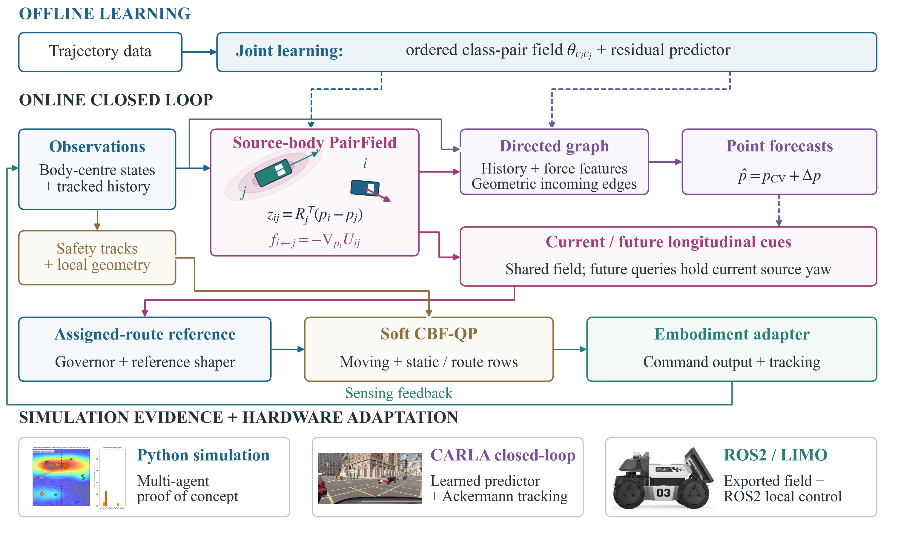
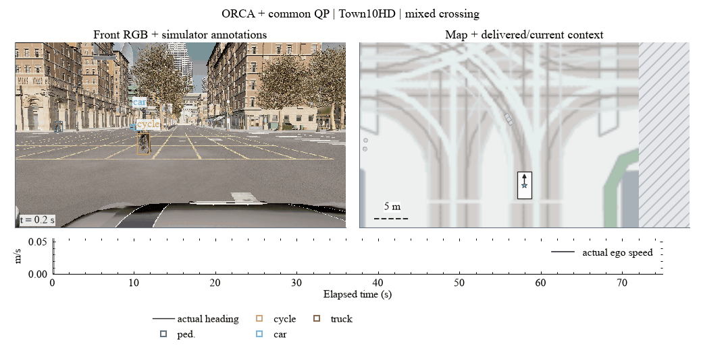
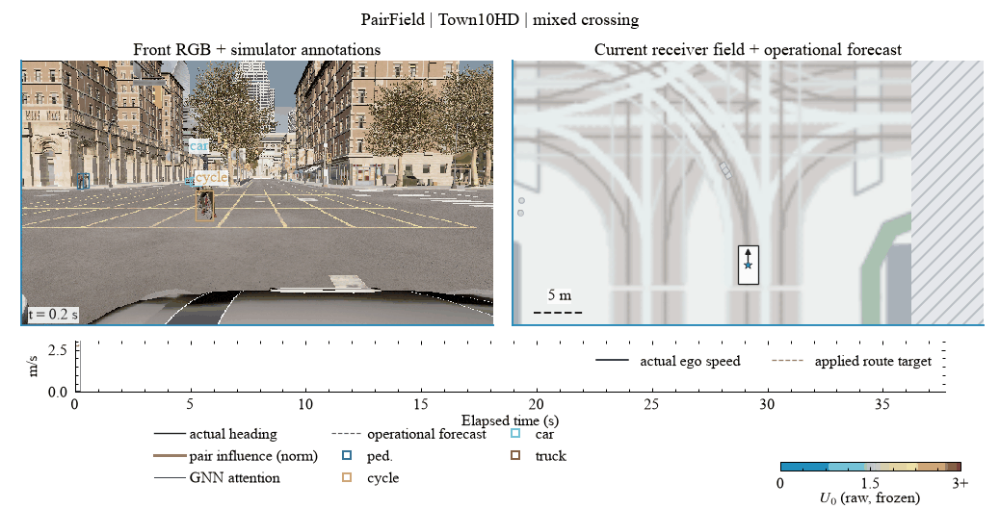
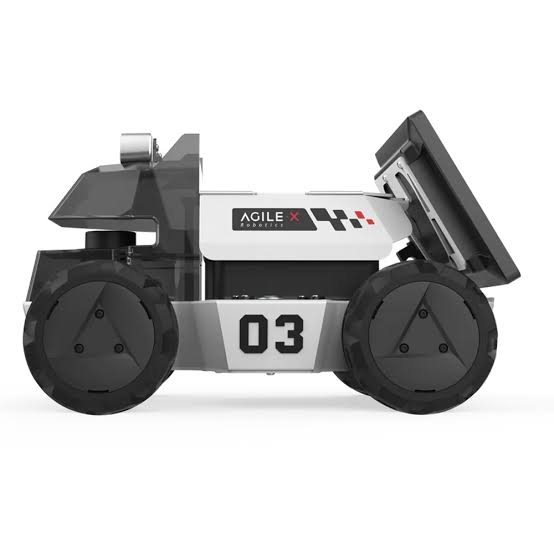

APF + common QP
HGV contact recordedContact near 12.1 s, at 21.7% route completion. The last recorded camera precedes the callback by one tick.
GIF replaySocial navigation · interaction fields · predictive control
Class-conditioned fields for
heterogeneous navigation
A shared interaction representation connects source-aligned fields to graph prediction and route-constrained control.
The repository contains a portable CARLA reproduction preview. The complete release will follow.
Navigation among pedestrians, cyclists and vehicles requires more than reaching a goal without collision: the robot must also regulate how closely it passes others and how much it disrupts shared motion. PairField represents heterogeneous interactions with an ordered class-pair potential aligned to each source agent's body frame. Its gradient supplies features to a directed prediction graph and current/future navigation cues. An engineered route interface and barrier-based filter connect these cues to physical tracking. We examine the resulting tradeoffs through planar simulation, closed-loop CARLA recordings and a ROS 2/LIMO hardware adaptation. The results below distinguish interaction-space proxies, task progress and computational cost; qualitative hardware demonstrations are not treated as four-class quantitative validation.
Method
Surrounding agents differ in size and motion. PairField learns an ordered receiver/source class-pair potential in each source body's coordinate frame. Its longitudinal axis follows that agent's heading, independently of the ego camera.
The resulting force enters the prediction graph and the current navigation cue. Predicted positions produce a separate anticipatory cue. On roads, negative route-tangent components reduce target speed; they do not authorize lane changes. A CBF-QP filters the shaped reference before tracking.


Force features and neural attention are different quantities. Future field queries retain current source headings in this implementation.
Matched comparison
Same fixture, source-body predictor, sensing interface and current/future QP. APF replaces the nominal interaction field.
CARLA tracks are gated by semantic LiDAR; identities, classes and kinematics remain privileged. Camera boxes are native instance-mask annotations, not outputs of a learned detector.
Contact near 12.1 s, at 21.7% route completion. The last recorded camera precedes the callback by one tick.
GIF replayGoal at 40.60 s on the assigned route. The minimum actual-body SAT margin is 0.40 m.
GIF replayBoth videos start at the same elapsed time. The APF recording ends after contact; it is not padded or replayed as a successful full route.

More interactions
Agent count and class diversity vary separately. These clips illustrate behavior, not additional independent benchmark samples. Rosters below are prescribed traffic, not simultaneous visible-track counts.
Current replays use a fixed 64 × 36 m BEV crop with no per-frame zoom. Distant actors can leave the display without leaving the controller's inputs.
Three pedestrians, one bicycle, one car and one truck. Contact-free goal at 31.90 s. The matched shared-class and no-field runs also finish without contact.
GIF replaySix pedestrians, two bicycles and three cars. Contact-free goal at 33.25 s, with source-body fields and logged graph connections.
GIF replayA different seed with the same 6 / 2 / 3 roster; contact-free goal at 34.00 s. This numerical-development recording is not an extra efficacy trial.
GIF replayA turning source car changes its body heading. The current field follows that measured orientation; the run reaches its goal without contact.
GIF replayA contact-free 30.55 s goal with mixed road users. Pedestrian presence here does not establish a critical pedestrian-prediction test.
GIF replayOne four-class fixture and seed, with all three separately fitted systems. All finish without native contact. Inspect the same 9–20 s interval: Shared-class waits longer and leaves a larger minimum pedestrian gap; PairField progresses with less additional NPC stopping, but does not dominate No field. Cars and the truck are present yet distant in this pilot.
Historical receiver-axis V5.1, separate from the source-body controller above. Full videos retain native 20 Hz capture and fixed-scale BEV views. A gray tile means that arm's recording has ended; no endpoint is frozen. These capture-only examples are not added to the 72-episode table below.
Both finish without contact. ORCA's closest corrected body margin to the cyclist is 0.23 m; PairField's is 2.41 m. Goal times: 36.10 / 38.95 s.
Critical 12 s GIFSFM reaches 29.36% of the route within 75 s; PairField reaches its goal at 36.00 s. Neither has native contact: this is a progress failure, not a collision.
Critical 12 s GIFTown10HD, seven agents: four pedestrians, one bicycle and two cars. ORCA records pedestrian contact and does not finish within 75 s; the matched historical PairField run finishes at 37.70 s without contact. These complete-run GIF derivatives sample native 5 Hz camera captures at 2 Hz. They are not 20 Hz recordings and are not interpolated.


This still illustration uses a different earlier receiver-axis controller. It is separate from the source-body comparisons and the 72-episode density cohort.

Measured interaction quality
Interaction-space exposure and simulator response complement goal completion and native contact counts. The current pilot and the historical density study are reported separately.
For each class, Rc = Jc / Ec, where Jc = ∑ exp(−max(d, 0) / 1 m) Δt and Ec is the observed actor-time. Here d is the signed body SAT support margin. Tables display 1000 Rc: a dimensionless proximity index, not a percentage. Lower values mean less of this geometric exposure, not measured human comfort. The separate “below 1 m” column is a true actor-time percentage.
NPC burden is the signed change in summed stopped actor-time against both matched absent-ego recordings over a fixed 0–20 s window. It measures simulator traffic response, not perceived comfort or a verified social convention. These distinctions follow social-navigation evaluation guidance.
Three pedestrians, one bicycle, one car and one truck; one episode per system. All three reach without native contact. Proximity indices include planning through the observed terminal stop; NPC contrasts use the same fixed 0–20 s interval in every arm.
| System | Goal (s) | Pedestrian R ×1000 | Bicycle R ×1000 | Min. pedestrian SAT (m) | Extra NPC stopped actor-s |
|---|---|---|---|---|---|
| PairField | 31.90 | 9.768 | 26.869 | 1.242 | +0.55 |
| Shared-class | 34.10 | 13.923 | 21.994 | 1.866 | +2.70 |
| No field | 31.75 | 8.810 | 28.569 | 1.362 | +0.55 |
The two absent-ego references give the same stopping contrasts shown here. PairField has less additional NPC stopping than Shared-class in this fixture, while No field ties that result and has lower pedestrian exposure. Larger minimum spacing and lower integrated exposure are different objectives. This is a tradeoff, not universal class-aware superiority. All current class/window/threshold values · Both-reference NPC contrasts.
| Controller | Goal / contacts | Observed (s) | Actor-time (s) | R ×1000 | Below 1 m (% actor-time) |
|---|---|---|---|---|---|
| PairField | Yes / 0 | 41.25 | 247.50 | 14.622 | 1.172 |
| Shared-class | Yes / 0 | 44.10 | 264.60 | 14.989 | 1.134 |
| No field | Yes / 0 | 41.00 | 246.00 | 14.833 | 1.179 |
| APF + common QP | No / 1 | 12.25 | 73.50 | 18.041 | 1.769 |
Normalization accounts for observed actor-time, but does not remove contact/abort censoring or endogenous waiting. APF's observation is shorter; a common 0–12.1 s prefix and all 0.5 / 1 / 2 m threshold sensitivities are included in the download. Dense Full, Shared-class and No field have identical NPC stopping contrasts: 0.00 / −0.05 actor-s against reference 1 / 2. No NPC-response advantage is claimed for those three arms.
72 episodes: six methods × two towns × two loads × three seeds. D1 has 4 pedestrians / 1 bicycle / 2 cars; D2 has 6 / 2 / 3. Each cell is the median of six episode-specific normalized indices per load, not a pooled frame test. This earlier receiver-axis cohort contains no trucks.
| Method | Contact-free goals (out of 6 each) | All classes R ×1000 | Pedestrian R ×1000 | Bicycle R ×1000 |
|---|---|---|---|---|
| ORCA + QP | 3 / 2 | 41.825 / 27.290 | 1.474 / 0.430 | 113.055 / 20.809 |
| SFM + QP | 6 / 3 | 6.808 / 24.461 | 0.445 / 0.567 | 40.572 / 2.750 |
| Geometry + QP | 3 / 2 | 35.491 / 32.079 | 0.539 / 0.441 | 64.959 / 14.339 |
| Class-label ablation | 6 / 6 | 3.687 / 5.526 | 0.257 / 0.633 | 12.928 / 5.062 |
| Longitudinal interface off | 5 / 6 | 2.620 / 3.094 | 0.407 / 0.486 | 6.456 / 3.888 |
| PairField | 6 / 5 | 2.805 / 4.843 | 0.318 / 0.934 | 11.126 / 4.925 |
PairField's total normalized exposure is lower than ORCA and Geometry in 12/12 matched cases and SFM in 11/12. Class-specific rankings differ: the high-load pedestrian column does not favor PairField, and the fixed-label ablation has more contact-free goals. That ablation relabels neighbor inputs as cars under fixed weights; it is not the separately trained Shared-class system. The historical numerator is screened at 30 m; current tables use all physical actors, so the cohorts are not pooled. All 72 normalized episode records · Definitions and table values (JSON).

| Controller | Goal / contacts | Route (%) | Min. car / HGV SAT (m) | Raw jerk RMS / peak (m/s³) | Command p95 / max (ms) | Calls > 50 ms |
|---|---|---|---|---|---|---|
| PairField | Yes / 0 | 96.20 | 1.23 / 0.40 | 19.47 / 324.52 | 24.68 / 525.63 | 5 / 813 |
| Shared-class | Yes / 0 | 96.27 | 1.33 / 0.25 | 26.42 / 402.81 | 23.46 / 120.42 | 3 / 870 |
| No field | Yes / 0 | 96.29 | 1.18 / 0.40 | 20.97 / 324.54 | 25.76 / 114.79 | 3 / 808 |
| APF + common QP | No / 1 | 21.75 | 4.02 / −0.30 | 21.26 / 136.62 | 24.10 / 85.21 | 1 / 242 |
Descriptive episode values, not population estimates. Jerk is unfiltered and includes launch and observed stop; observation lengths are 41.25 / 44.10 / 41.00 / 12.25 s. The collided APF run is shorter. Command timing excludes upstream sensing/simulation; full-frame p95 is 100.67 / 97.78 / 110.70 / 109.38 ms. Goal checks can trigger before 100% route completion. No hard-real-time claim is made.
PairField, shared-class and no-field reach contact-free goals in 40.60, 43.45 and 40.35 s. PairField improves on shared-class spacing in this case but nearly ties no-field. Excess NPC stopping is identical across arms against both ego-absent controls. High launch and terminal jerk remains unresolved.
The system uses semantic-LiDAR returns to gate tracks; association, classes and kinematics remain privileged. These are modular closed-loop experiments. The displayed camera boxes are simulator-instance annotations. Neither raw-sensor end-to-end learning nor improved participant comfort is established by these clips.
72 episodes: six controllers × two towns × two loads × three seeds. D1 has 4 pedestrians / 1 bicycle / 2 cars; D2 has 6 / 2 / 3. No trucks are in this cohort. This is the earlier receiver-axis controller, not the current source-body system.
| Historical controller | Contact-free goals D1 / D2 (out of 6 each) | Contact / non-goal runs | Mean route (%) | Median SAT (m) | Median proximity (actor-s) | Median smoothed jerk (m/s³) | Median command p95 (ms) |
|---|---|---|---|---|---|---|---|
| ORCA + QP | 3 / 2 | 2 / 7 | 61.0 | 0.41 | 21.63 | 5.05 | 5.45 |
| SFM + QP | 6 / 3 | 0 / 3 | 81.1 | 0.53 | 2.67 | 8.14 | 5.18 |
| Geometry + QP | 3 / 2 | 0 / 7 | 60.3 | 0.61 | 25.24 | 4.73 | 5.28 |
| Class-label ablation | 6 / 6 | 0 / 0 | 96.2 | 1.27 | 1.64 | 7.09 | 14.18 |
| PairField w/o longitudinal interface | 5 / 6 | 1 / 0 | 96.2 | 1.39 | 1.08 | 8.40 | 14.08 |
| PairField | 6 / 5 | 1 / 0 | 96.2 | 1.24 | 1.23 | 7.99 | 14.09 |
Contact and non-goal counts may overlap. Continuous cells summarize episodes, not frames. Proximity is unnormalized corrected-SAT kernel exposure within 30 m; it is not measured human comfort. Jerk uses a fixed centred 0.25 s velocity mean and is not comparable with the raw-jerk table above. The class-label ablation relabels neighbors as cars under fixed weights; it is not the separately trained shared-class system. These results do not establish a general benefit from class conditioning. All 72 episode records (CSV).
The simpler simulator exposes fields and graph interactions directly. CARLA adds simulated sensing, native traffic response and physical tracking.


The real robot connects the field formulation to onboard sensing and bounded base commands. This is a deployment interface and qualitative demonstration, not the full CARLA prediction stack running unchanged.

The ROS 2 bridge uses odometry, LaserScan geometry and tracked agents in the local frame. An exported class-pair field, optional constant-velocity anticipation, speed governor and soft dynamic-agent / hard static-obstacle QP produce bounded Twist commands for the observed differential-drive configuration.
The available logbook describes an earlier torch-free field runtime and preliminary pedestrian-oriented deployment. Heterogeneous perception, camera-to-BEV calibration, parity with the current source-body predictor and quantitative hardware acceptance remain pending. LIMO is therefore reported as hardware feasibility, separately from the CARLA comparisons.


PairField
Goal 31.90 s · no contactPedestrian encounter: minimum SAT margin 1.242 m. Additional NPC stopping over 0–20 s: 0.55 actor-s.
GIF replayShared-class
Goal 34.10 s · no contactPedestrian encounter: minimum SAT margin 1.866 m, with 3.35 s ego stopping. Additional NPC stopping: 2.70 actor-s.
GIF replayNo field
Goal 31.75 s · no contactPedestrian encounter: minimum SAT margin 1.362 m. Additional NPC stopping is also 0.55 actor-s; the logged interaction field is zero.
GIF replay